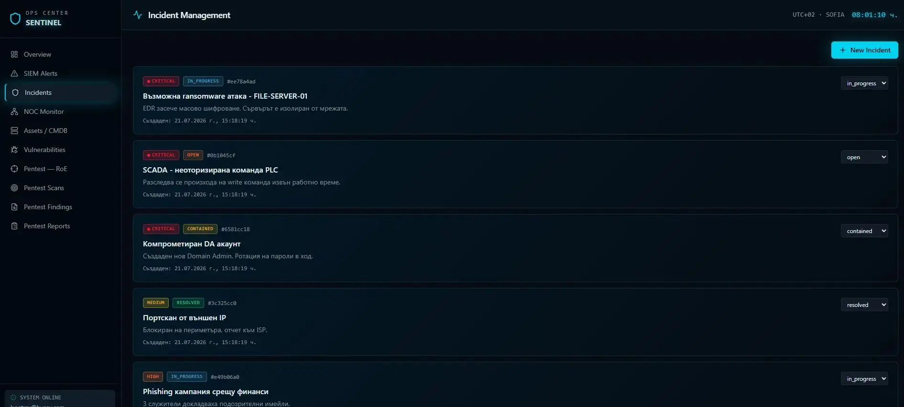

Cyber Incident Response
Реакция при киберинциденти
Когато всяка минута има значение, DefComs помага да ограничите щетите, запазите доказателствата и възстановите бизнеса по контролиран начин.

Подредена реакция под напрежение
От първия сигнал до възстановяването
Работим с технически, управленски и правни екипи. Поддържаме ясна последователност от действия, за да се избегнат прибързани решения и загуба на важна информация.
- Първоначална оценкаОпределяне на обхват, засегнати активи и непосредствен риск.
- Containment и eradicationОграничаване на страничното движение и премахване на причината.
- Forensic анализСъбиране на данни, времева линия и технически доказателства.
- Възстановяване и докладПлан за връщане към работа и мерки за недопускане на повторение.
Готовност преди инцидента
Retainer и план за реакция
Бързата реакция започва преди кризата. Помагаме с incident response планове, контактни процедури, tabletop упражнения и предварително определени приоритети.
Често задавани въпроси
Incident Response
Какво трябва да направим при съмнение за пробив?
Запазете наличните данни, не изтривайте засегнати системи и се свържете с екип за реакция, който може да ограничи инцидента и да запази доказателствата.
Работите ли при ransomware инциденти?
Да. Оценяваме обхвата, изолираме засегнатите активи, подпомагаме разследването и плана за безопасно възстановяване.
Обхват, срокове и оферта
Как се формират обхватът и офертата за реакция при инциденти
Всеки ангажимент се договорира писмено след кратка оценка на средата. Етапите, отговорностите и правата за действие се описват в предложението, а сроковете за реакция и нивата на обслужване (SLA) се договарят индивидуално според критичните ви активи и приоритети.
- Критичност и размер на средатаКолко бързо трябва да се реагира и колко системи могат да бъдат засегнати.
- Ниво на дежурствоПостоянна денонощна готовност или реакция по заявка.
- Време на реакция (SLA)Договорени срокове за първа реакция и ескалация.
- Подготовка преди инцидентИзготвяне на план, контакти и права за действие предварително.
Офертата се формира след оценка на тези фактори — заявете консултация или минете през NIS2/DORA самооценката.